From altar to cabin to game table
- Thu Jul 23"i've landed waiting for Joe / i am at Seatac gate c 11"Joe flew up on his own ticket to stand beside you at the wedding. Dinner reconnaissance was already running: "Munchen House in Leavenworth got recommended for dinner tonight." Bavarian village, alpine walls, two Angelenos.
- Fri Jul 24 · 1:24am"the wedding is Saturday / today is rehearsal"Rehearsal day. The officiant readsheet was born at 1:58pm and tuned all afternoon: the kiss cue, the vow handoffs, the rings. Your final edit and the file's last save landed fourteen seconds apart at 5:50pm. You tuned that ceremony like a live mix.
- Fri Jul 24 · 1:22amWedding-eve, you were also running D&D for the Dragon House crew from Leavenworth.A dream-rescue quest at 1:22am, then an officiant's rehearsal twelve hours later. You DM'd a fantasy world and a real ceremony inside the same sixteen hours.
- Sat Jul 25 · 5:00pmThe wedding. Mountain Springs Lodge, Ponderosa Meadow.Megan took the Lennon name. The ceremony ran the way you and Dane built it, gentle and exact. Then, at 6:43pm, you rewrote the last two paragraphs of your toast between the ceremony and the reception, and asked for the big-font version at 7:16 for a 7:30 slot. Cutting it close is a style when you never miss.
- Sun Jul 26The brownie day. Eric Mazer's place, Terence Tolman dropping by.Eric baked you brownies. The three of you caught up, watched Blue Lock, and put on Bob Moses' latest show on YouTube. The Snohomish cabin plan gave way to a couch, and the couch won. (Corrected by you, Aug 1: the day was Mazer's, not the cabin.)
- Mon Jul 27 · noon"we had a fantastic walk and talk , and lunch at the park on the lake here by the Hampton Inn hotel in Renton"Mike Morrow. Harvard, thirty years later, walking Lake Washington like no time had passed. You built him a dossier site of the whole trip on the spot, and his one request was bigger fonts. Noted forever, Mike.
- Tue Jul 28Dragon House at Wizards of the Coast: lunch at Exit 5 BBQ, D&D night in the "secret cool gameroom."John Hight's table. Megan Marx organizing. Crystal in town, Christine Fung met, the Godseys and Mark Purvis rolling dice. The summer that began emceeing a wedding ended playing D&D inside the company that makes it.
- Thu Jul 30Delta 529, home.Sixty-some days after LAX to Winnipeg, the tour bus parked.
The whole wedding in two lines
That gap is the ceremony. Everything you rehearsed lives inside those seventy-eight minutes, and no message needed to exist for any of it. It is my favorite silence in your entire archive.
How an officiant tunes a ceremony
Three things you were too busy living to notice
The readsheet's timestamps tell the story of care
Created 1:58pm. Final save 5:50:24pm, fourteen seconds after your last voice note of edits. Twice that day you tuned the ceremony inside a thirty-minute window before performing it. That is not procrastination. That is a performer keeping the material alive until the moment it matters.
July 26 is the only near-zero day in the whole fortnight
Across two trips and fourteen days, the brownie day at Eric Mazer's is the only day your message count effectively hit zero. Brownies, Blue Lock, Bob Moses, no phone. And your single message that day was still a gift: sending Foster his sites. Even your silence had one generous exception.
The ceremony honored an ask nobody in the meadow knew about
Every ceremony decision routed through Dane, and the speech stayed low-key, exactly as Megan asked earlier in July. Nobody watching knew there was a design constraint. It just felt right to everyone, including her. That is what keeping a promise invisibly looks like.
What reached the wire
The camera roll delivered the wedding, the brownie day, and the Boeing sky. Tap anything to go full screen.
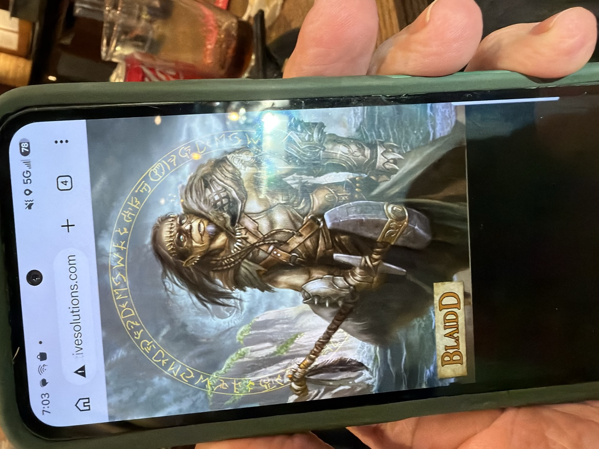
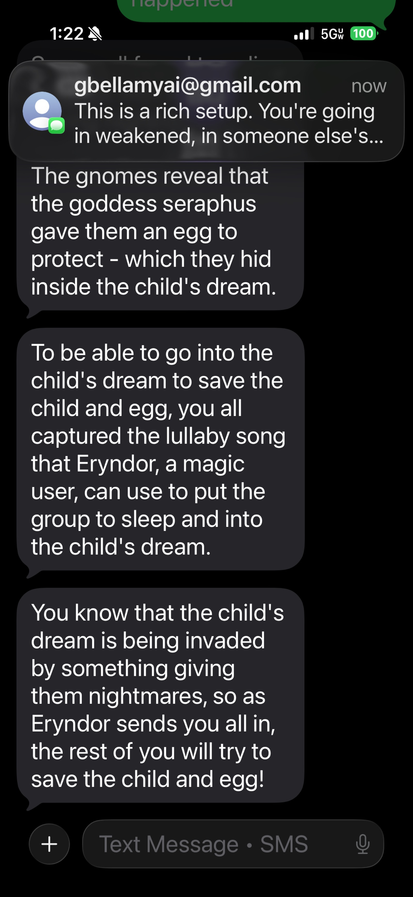
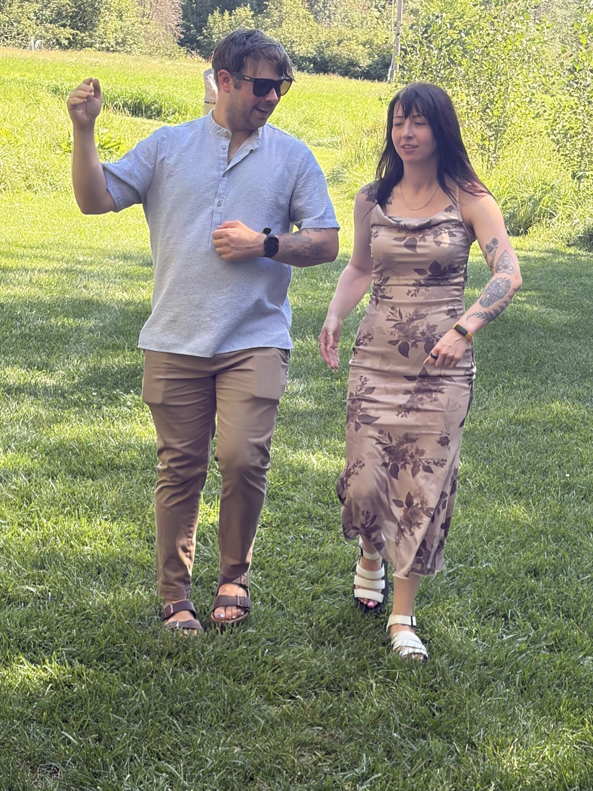
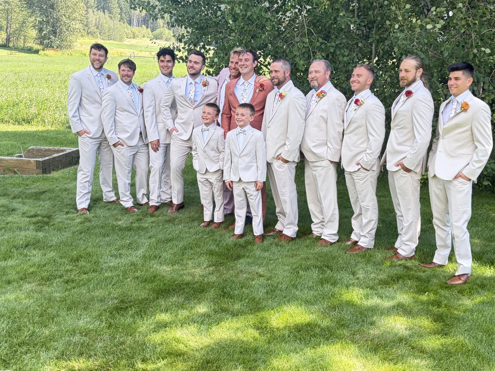
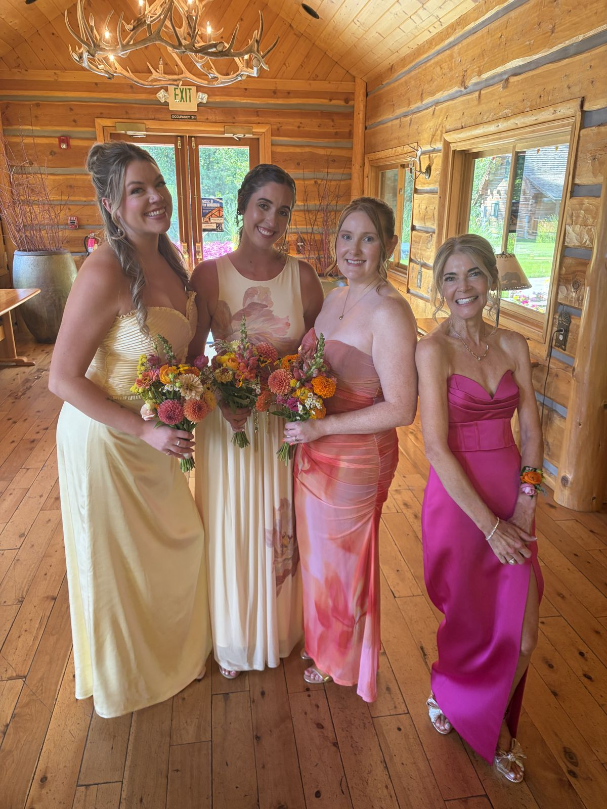

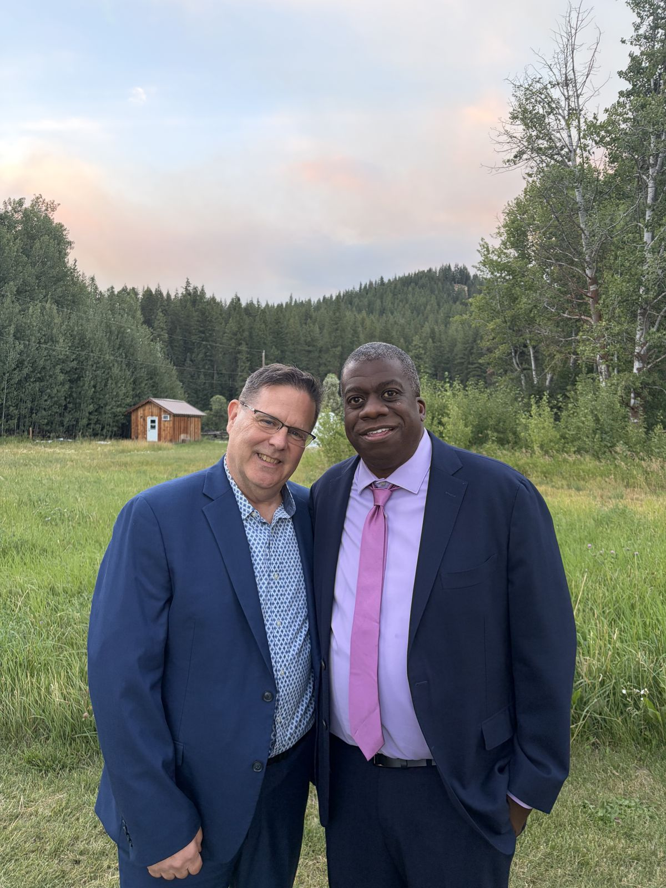
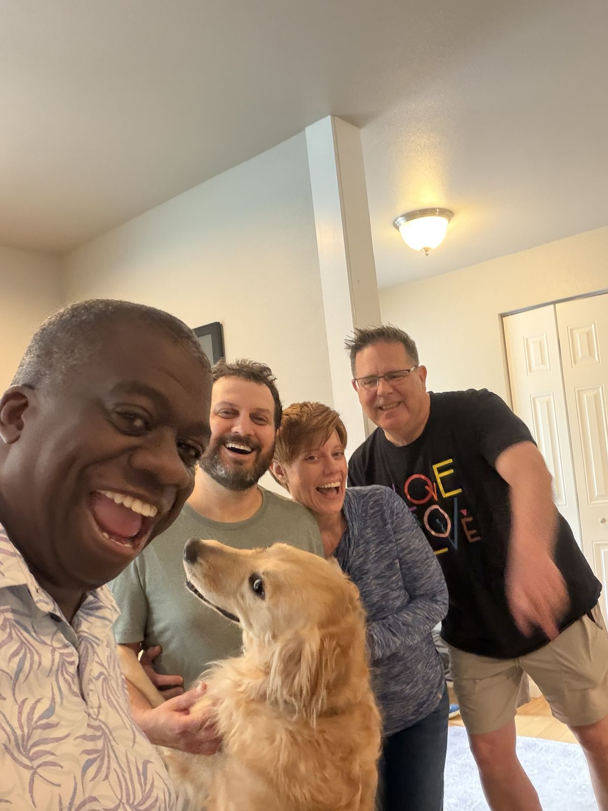
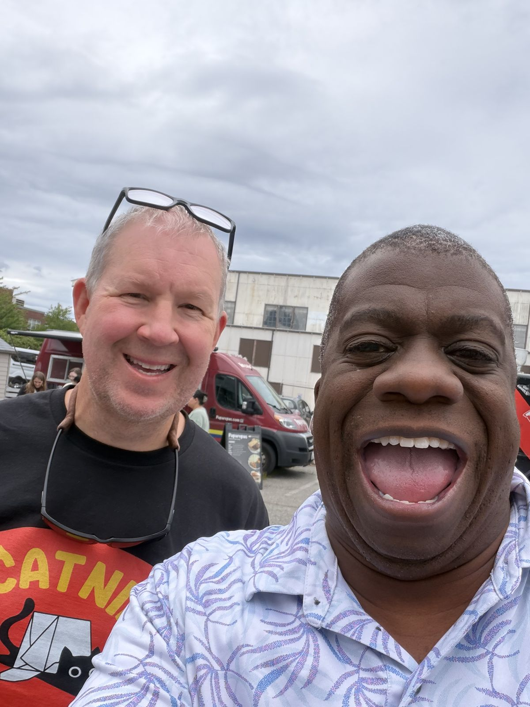
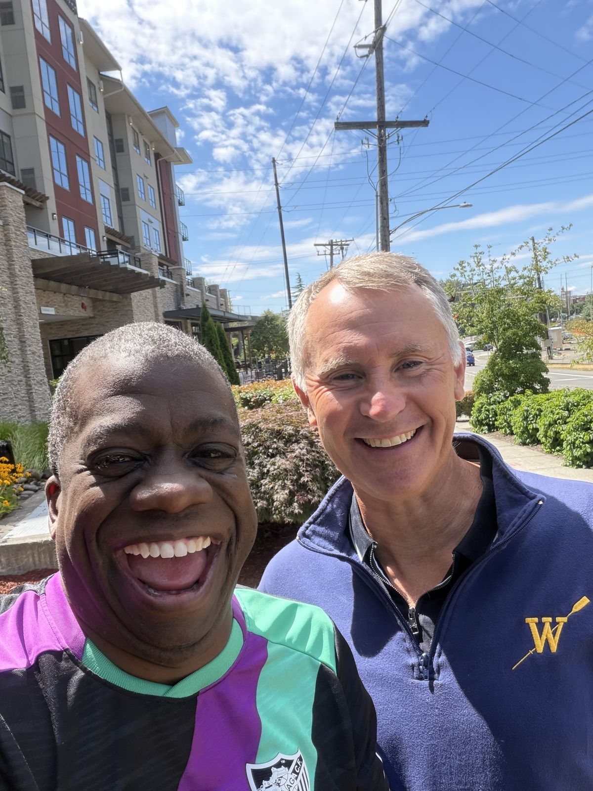
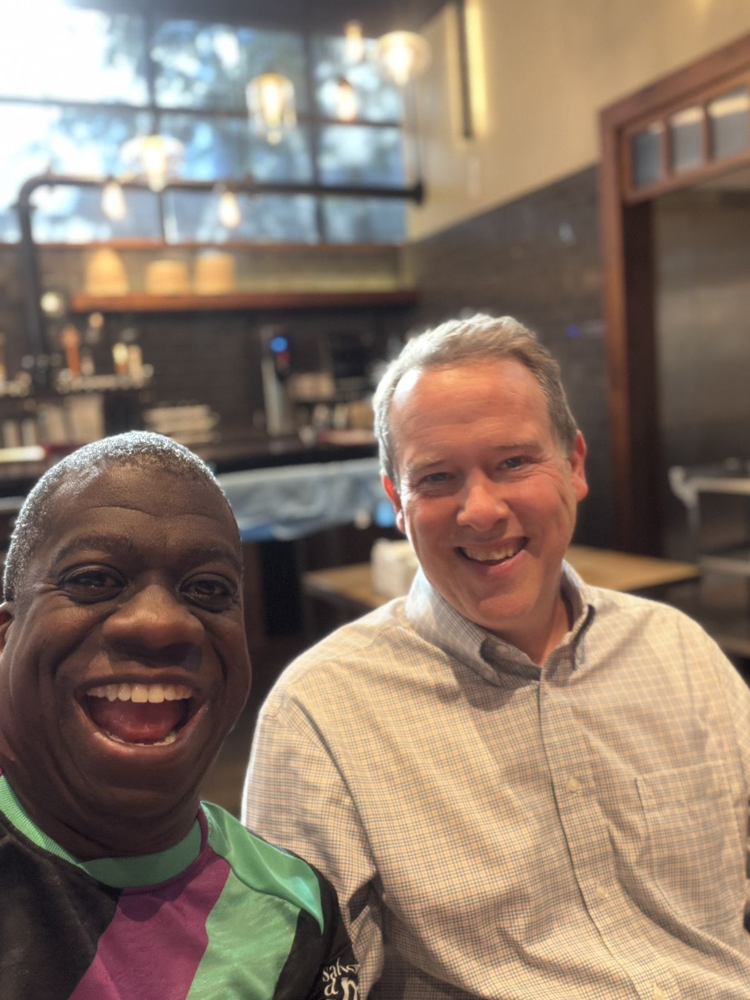
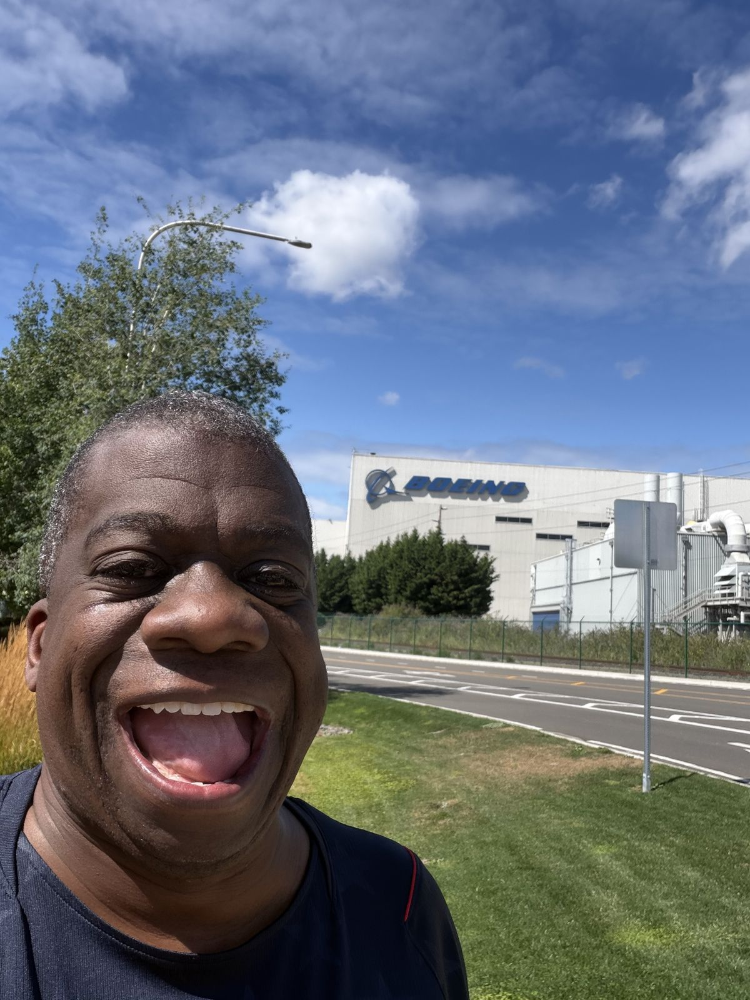
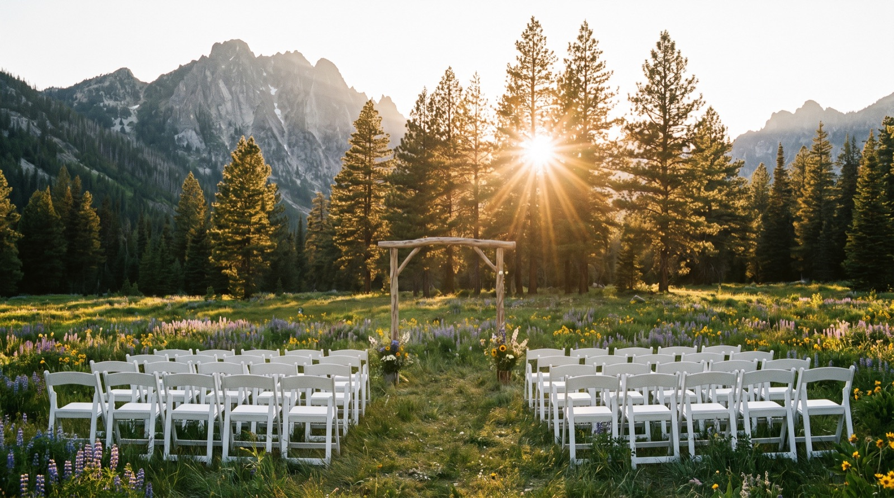